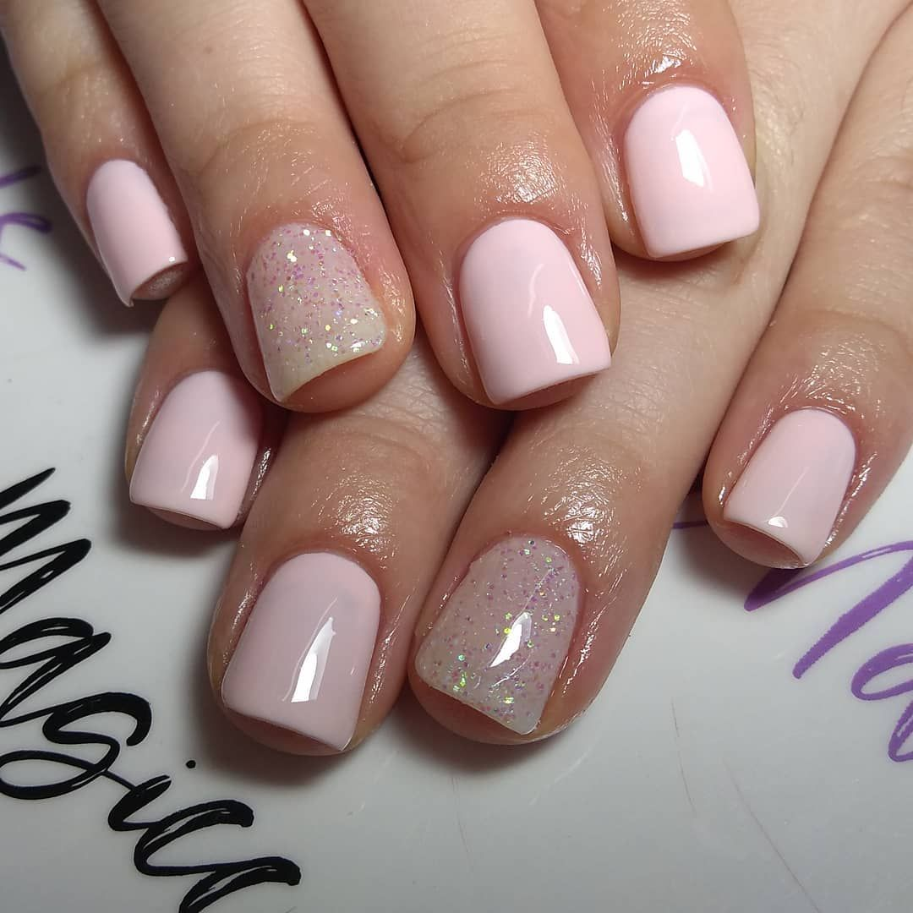
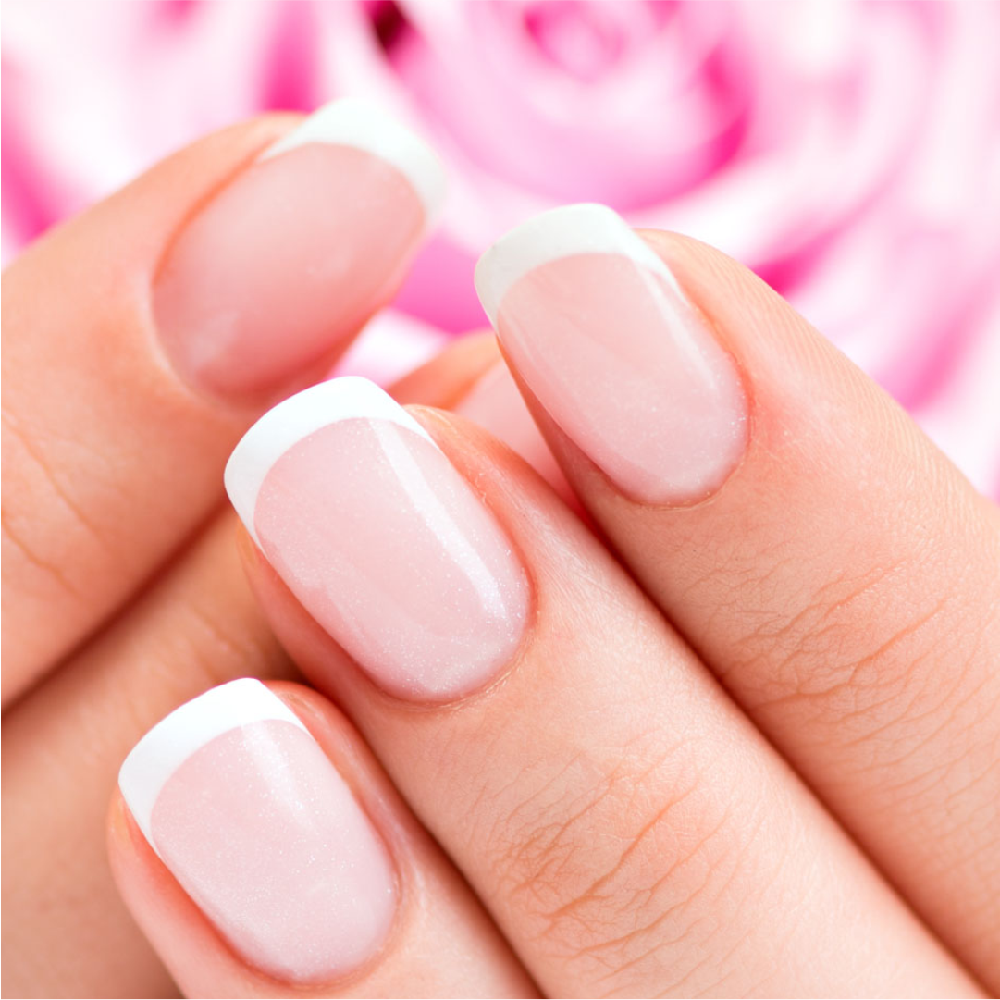

Kapping en gel

El Kapping consiste en aplicar una fina capa de acrílico o gel fortificador sobre la uña que actuará como una barrera protectora. A diferencia de las uñas esculpidas, este baño en gel kapping no alarga la uña natural sino que acompaña el crecimiento de la misma y dura hasta 20 días.
Esmaltado semipermanente
Un esmalte semipermanente es un tipo de manicura que se hace cada 2-3 semanas; a diferencia de los esmaltes clásicos, la manicura semipermanente no requiere que se retire y se vuelva a poner de nuevo con tanta frecuencia, debido a que se cura con una lampara LED, y por lo tanto dura mas.
Esmaltado tradicional
Es el esmaltado normal, con secado al aire, pero aplicando una base coat y un top coat para que tenga mas durabilidad.